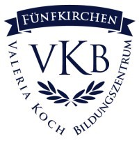

A középiskolai és gimnáziumi tanulmányaimat Pécsett a Koch Valéria Iskolaközpontban végeztem, mely egy német kéttannyelvű iskola illetve gimnázium. Tanulmányaim szinte kivétel nélkül minden évben kitűnőek voltak, valamint angolból és németből is felsőfokú nyelvvizsgát tettem a gimnázium végén. Az érettségimet is minden tantárgyból német nyelven írtam.
A gimnáziumot követően sikeresen felvételt nyertem a Budapesti Műszaki Egyetem Gépészmérnöki Karára, Energetikai Mérnöki alapszakra. Jelenleg is ezen a szakon tanulok a tanulmányaim 1. félévét hallgatom.